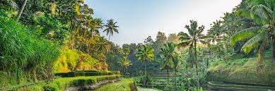

Бали — Малай архипелагындағы, Кіші Зунда аралдары тобындағы арал, Индонезияның аттас провинциясының бөлігі.
Оны оңтүстіктен Үнді мұхиты, солтүстіктен Тынық мұхитының Бали теңізі шайып жатыр. Оны батыстан Ява аралынан аттас бұғаз, шығыстан Ломбок аралынан Ломбок бұғазы бөліп тұр.
Аралдың ауданы 5416,4 км², ұзындығы шығыстан батысқа қарай 145 км, солтүстіктен оңтүстікке қарай 80 км. Бали мен Ломбоктан шығыс бағытта созылып жатқан Уоллес сызығы тропикалық Азияның флорасы мен фаунасы мен Австралия мен Жаңа Гвинеяның табиғи аймақтары арасындағы шекара қызметін атқарады.

Аралдың атауы Үндістаннан шыққан. balî - «кері, қарама-қарсы». Сондай-ақ культтік мағына болуы мүмкін: Бали - жер асты патшалығының
билеушісі. Оның солтүстігінде орналасқан Бали теңізі аралдың атымен аталған.Пальмалар әсіресе Балиде жақсы ұсынылған. Борасса пальмаларының кептірілген және басылған жапырақтары қасиетті мәтіндер жазылған «лонтарларды» жасау үшін қолданылады.
Қант пальмасының жапырақтары ғибадатханаларға салттық құрбандық ретінде әкелінетін гүл шоқтарын жасау үшін қолданылады.
Сондай-ақ ағаштың басқа түрлері бар, мысалы, қара ағаш немесе қара ағаш, сондай-ақ бальза ағашы, бұл өте жеңіл және дәстүрлі маскалар үшін ыңғайлы материал. Көптеген бамбук ағаштары бар, олардың кейбір түрлері диаметрі 30-40 см жетеді.
Аралдың барлық жерінде дерлік табылған бамбук сонымен қатар балилықтар үшін әмбебап құрылыс материалы болып табылады.